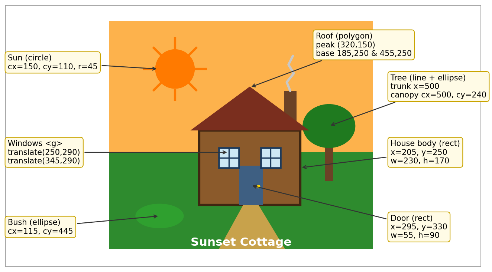

The left panel is the original house from Step 1. The right panel is the customised version. Changes include moving components (the sun and the tree), changing fill colours (sky, roof, door), adding a stroke to the house, and adding new items (sun rays and a bush). Every change is listed in the table below.

| Element | Before | After | Type of change |
|---|---|---|---|
Sky <rect> |
#87CEEB light blue | #FDB24C sunset orange | Changed fill colour |
Sun <circle> |
cx=515, cy=85 · yellow | cx=150, cy=110 · orange | Moved + changed fill colour |
Sun rays <line> |
None | 8 rays around the sun | Added new items (strokes) |
Tree <line> + <ellipse> |
x=110 (left) · #228B22 | x=500 (right) · #1F7A1F | Moved + changed fill colour |
Bush <ellipse> |
None | cx=115, cy=445, green | Added new item |
House body <rect> |
No stroke | stroke #3E2611, width 4 | Added stroke |
Roof <polygon> |
#A0522D sienna | #7A2E1E dark red | Changed fill colour |
Door <rect> |
#5C3317 brown | #3E5F82 blue | Changed fill colour |
Garden path <path> |
Narrow, #D2B48C | Widened curve, #C8A24B | Reshaped + changed fill colour |
Windows group <g> |
frame #5C3317 · translate(_, 285) | frame #1B3A5C · translate(_, 290) | Changed stroke + moved (translate) |
Label <text> |
"My House", #111 | "Sunset Cottage", #fff | Changed content + fill colour |